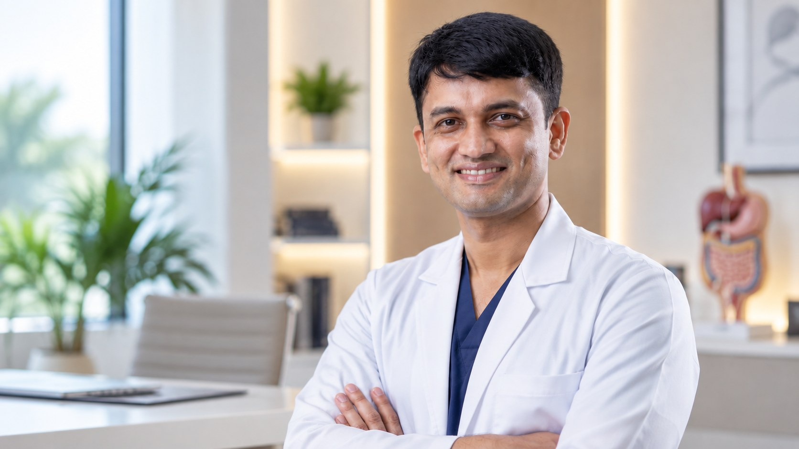
MBBS (BMC) · MS (Gold Medalist) · FMAS · DMAS
General, Laparoscopic and LASER Surgeon
Precise practice. Compassionate care.
Consultations available by prior appointment across Mangalore, Puttur and Sullia.
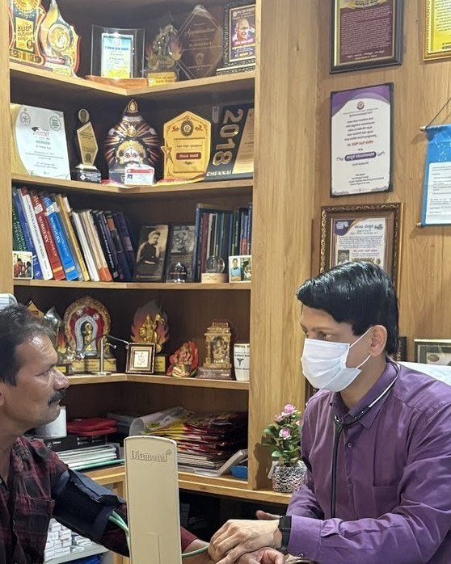
Varicose veins are enlarged, twisted superficial veins, most often seen in the legs. They can cause heaviness, aching, swelling, itching or visible bulging veins.
They usually develop when one-way valves in the veins become weak or leaky. Family history, age, pregnancy, prolonged standing, excess weight and previous vein problems can contribute.
Symptoms may include visible veins, aching, heaviness, ankle swelling, itching, skin colour changes, cramps or discomfort that worsens after prolonged standing.
Assessment usually includes examination and may include venous Doppler ultrasound to map reflux, vein size and suitability for treatment such as endovenous laser ablation.
Treatment is based on symptoms and scan findings. Conservative measures can help some patients. When suitable, LASER treatment such as EVLA can close the diseased vein from inside, with follow-up advice tailored to the patient.
An anal fistula is an abnormal tract between the anal canal and nearby skin. It often follows an abscess or infection around an anal gland.
Most fistulas develop after infection and abscess formation. Recurrent abscess, Crohn's disease, previous surgery or other inflammatory conditions may be considered depending on the patient.
Symptoms may include repeated swelling, pain, discharge, irritation, an opening near the anus or recurrent abscess.
Evaluation includes local examination and assessment of the external opening. MRI, endoanal ultrasound or examination under anaesthesia may be considered for complex, recurrent or high fistulas.
Treatment aims to control infection, define the tract and protect sphincter function. Options may include drainage, seton placement, fistulotomy or sphincter-sparing procedures. LASER-based fistula treatment may be considered in selected cases after proper assessment.
An anal fissure is a small tear near the anal opening. It can be painful, especially during or after passing stool, and is often linked to hard stools or repeated irritation.
Common contributors include constipation, hard stool, diarrhoea, straining, childbirth-related injury and tight anal sphincter pressure.
Patients may feel sharp pain during stool passage, burning pain afterward, a small amount of bright red bleeding or fear of passing stool because of pain.
A doctor usually diagnoses fissure by history and gentle local examination. Further evaluation may be considered if the fissure is recurrent, atypical, not healing or associated with other bowel symptoms.
Treatment focuses on soft stools, pain relief, local medicines and reducing spasm. If a fissure becomes chronic or does not respond, a procedure or surgery may be discussed.
Piles are swollen blood vessels around the anus or lower rectum. They are common and may range from mild irritation to bleeding, swelling or prolapse.
Constipation, straining, prolonged sitting on the toilet, low-fibre diet, pregnancy, obesity and repeated bowel pressure can contribute.
Symptoms may include bleeding during bowel movements, itching, discomfort, swelling, a lump near the anus or tissue coming out during stool passage.
Assessment usually includes a careful history and local examination. Depending on age, symptoms and bleeding pattern, the doctor may advise proctoscopy, sigmoidoscopy, colonoscopy or other tests to rule out other causes.
Early treatment may include fibre, fluids, stool-softening measures and medicines. Procedures or surgery may be considered when symptoms persist, prolapse is significant or bleeding recurs.
Pilonidal sinus is a small tunnel or cavity near the cleft between the buttocks. It can remain quiet, become painful or repeatedly discharge.
Loose hair, friction, sweating, prolonged sitting, deep cleft anatomy and local irritation may contribute. It is not caused by poor hygiene alone.
Patients may notice pain, swelling, redness, discharge, bleeding, foul smell or repeated infection near the tailbone area.
Diagnosis is usually clinical. A doctor examines the area to identify pits, discharge, abscess or branching disease. Imaging is not routinely needed but may be considered in complex or recurrent cases.
An acute abscess may need drainage. Recurrent or persistent sinus disease may need a planned procedure, from limited procedures to flap surgery depending on extent and recurrence risk.
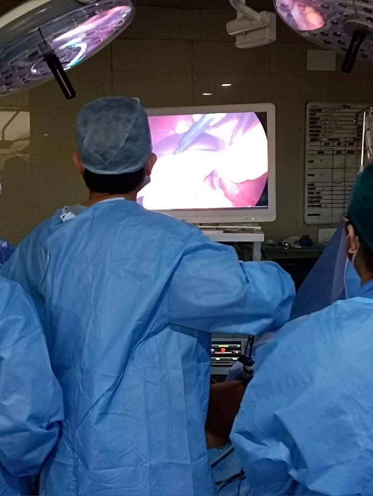
Gallstones are hardened deposits that form inside the gallbladder. Many are silent, but some cause pain or complications when they block bile flow.
Gallstones may form when bile contains excess cholesterol or pigment, or when the gallbladder does not empty well. Risk can be influenced by age, weight, pregnancy, rapid weight loss and family tendency.
Symptoms can include pain in the upper right abdomen, nausea, vomiting, bloating or pain after fatty meals. Fever, jaundice or severe persistent pain needs urgent assessment.
Assessment may include examination, ultrasound of the abdomen and blood tests for liver function, infection or pancreatitis.
Silent stones may not need treatment. Symptomatic or complicated gallstones are often treated by laparoscopic gallbladder removal when appropriate.
Appendicitis is inflammation of the appendix. It can progress quickly, so persistent or worsening abdominal pain should be assessed promptly.
Appendicitis can occur when the appendix becomes blocked or infected. Stool, swelling of lymph tissue or rarely other causes may contribute.
Pain may start near the navel and move to the lower right abdomen. Nausea, vomiting, fever, loss of appetite or pain on movement may occur.
A doctor assesses the history, abdominal examination and vital signs. Blood tests, urine tests, ultrasound or CT scan may be considered depending on symptoms and diagnostic uncertainty.
Treatment commonly involves antibiotics and surgery to remove the appendix when appendicitis is likely. Laparoscopic appendicectomy may be suitable for many patients.
A hernia is a bulge caused by tissue pushing through a weak area in the abdominal wall or groin. It may be painless at first or may cause discomfort with activity.
Hernias can be linked to natural weakness, previous surgery, heavy lifting, chronic cough, constipation, pregnancy, obesity or repeated strain.
Patients may notice a swelling that becomes more obvious on standing, coughing or straining. Sudden severe pain, vomiting or inability to push a hernia back needs urgent care.
Most hernias are assessed by history and physical examination. Ultrasound or CT scan may be considered when the diagnosis is unclear or anatomy needs clarification.
Many symptomatic hernias are repaired surgically. Open or laparoscopic repair may be discussed depending on hernia type, size, recurrence and patient factors.
GERD occurs when stomach acid regularly flows back into the tube connecting the mouth and stomach, irritating its lining.
Growths that develop in or on the uterus or ovaries, ranging from benign cysts and fibroids to conditions that require surgical evaluation and management.
Breast surgery may be needed for breast lumps, infections, abscesses, wounds or other breast conditions. Evaluation should be calm, respectful and based on clinical findings.
Reasons for surgery vary and may include benign lumps, infection, abscess, suspicious imaging findings, trauma or non-healing wounds.
Patients may notice a lump, pain, swelling, redness, nipple discharge, wound, fever or skin changes. These symptoms need proper assessment rather than assumptions.
Assessment may include clinical examination and imaging such as ultrasound or mammography depending on age and findings. FNAC or core biopsy may be advised where appropriate.
Treatment depends on diagnosis. It may include medicines, drainage of abscess, biopsy, excision of a lump or referral for specialist cancer care when needed.
The thyroid is a gland in the front of the neck. Thyroid surgery may be considered for selected nodules, enlargement, pressure symptoms, overactivity or suspected cancer.
Thyroid problems may be related to nodules, goitre, inflammation, hormone overactivity or suspicious changes.
Patients may notice a neck swelling, pressure, difficulty swallowing, voice change or symptoms of thyroid hormone imbalance. Some nodules are found incidentally.
Evaluation may include neck examination, thyroid function blood tests, ultrasound and needle sampling when indicated.
Treatment may involve monitoring, medicines, biopsy follow-up or surgery such as hemithyroidectomy or thyroidectomy, with discussion of voice, calcium and scar considerations.
A group of common urological conditions — fluid collection, vein enlargement, or foreskin tightness — assessed individually to determine the appropriate care.
Diabetic foot wounds need careful attention because diabetes can affect sensation, blood flow and healing. Early assessment can reduce the risk of infection and deeper tissue damage.
Common contributors include reduced sensation, pressure points, footwear injury, poor circulation, high blood sugar and delayed wound care.
Patients may notice an open wound, swelling, redness, discharge, bad smell, pain or sometimes very little pain because of reduced sensation. Fever needs urgent care.
Assessment may include wound examination, blood sugar review, infection markers, wound culture, X-ray or vascular assessment depending on severity.
Treatment may involve wound cleaning, dressings, pressure offloading, antibiotics when infection is present, diabetes control and surgery for drainage in selected cases.
Non-healing wounds or tissue loss requiring assessment of circulation and infection, with timely surgical care to prevent further complications.
Dr. Kishan Rao is a highly experienced and respected surgeon with more than 10 years of experience in the surgical field.
He is extremely empathetic to his patients, treating them like family, and always maintains high professional integrity and ethical standards.
He specializes in General Surgery, Laparoscopic Surgery and Advanced LASER Surgery, and performs a wide range of basic and advanced surgical procedures. He has a strong interest in using newer technology and advances in surgical care to support safe, appropriate treatment for his patients.
He is passionate about teaching and is a faculty member at the medical college.
Dr. Kishan Rao is a dedicated surgeon committed to providing high-quality care with clarity, compassion and responsible clinical decision-making.
Surgical decisions begin with careful assessment, clear explanation and an honest discussion of the options available. When surgery is appropriate, patients are guided through the procedure, recovery and follow-up with clarity and care.
Careful assessment before deciding the next step.
Treatment options explained in language patients and families can understand.
Guidance that continues through surgery, recovery and follow-up.
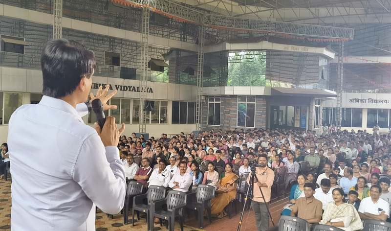
Dr. Kishan Rao is the Founder and Chief of The White Army, a free online medical education initiative with more than 3 lakh members across India and abroad. His work beyond clinical practice includes medical education, publications, student mentorship and public initiatives.
“Dear Doctor....., I am writing to express my sincere gratitude for the care you provided to my child during his surgery. You explain everything in calm way. Your skill, patience and kindness created fearless environment. Because of your expertise and compassion, my child is recovering well and we are so relieved.”
“Incredibly grateful to Dr. Kishan Rao! He patiently waited 30 minutes when I was running late, gave me a very thorough diagnosis, and clearly explained my reports. His down-to-earth nature and willingness to be accessible over WhatsApp for any follow-ups make him stand out. Truly exceptional care!”
“Dr. Kishan Rao is one of the best and most approachable doctor. I underwent fistula treatment under his care and he explained each aspect of the condition and treatment clearly. He was always available to address my doubts, especially after surgery and provided excellent support throughout my recovery.”
“Dr. Kishan Bai is an exceptional General and Laparoscopic Surgeon whose surgical expertise, calm approach, and dedication to patient well-being inspire great confidence. He takes the time to listen carefully, explains the diagnosis and treatment plan in a clear and thorough manner, and patiently answers every question.”
“I had undergone a surgery for Abscesses in the posterior perianal region, done by Dr. Kishan Rao Sir, at Bhat's Nursing Home, Mangaluru. It was excellent experience, he is very compassionate and took time to explain the diagnosis, why the procedure was needed and what to expect. Healing was faster than I expected.”
“I recently got successful hemorrhoids (piles) surgery. Dr Kishan Rao is best and experienced surgeon, he is kind and explained clearly about surgery. Thank you Dr. Nurse and staff's also good caring their patient.”
“My friend Mr. Gopinath, 73 years old, was suffering from severe varicose veins with deep vein thrombosis and a venous ulcer. Instead of unnecessary procedures, Dr. Kishan Rao treated him with simple medicines, proper dressings, and very effective lifestyle changes. His swelling reduced significantly and he is now able to walk comfortably.”
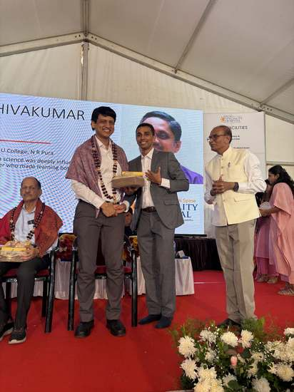
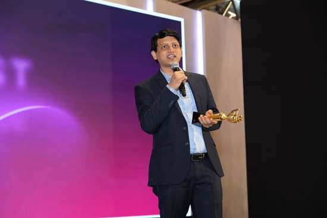
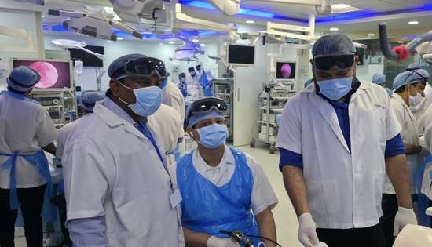
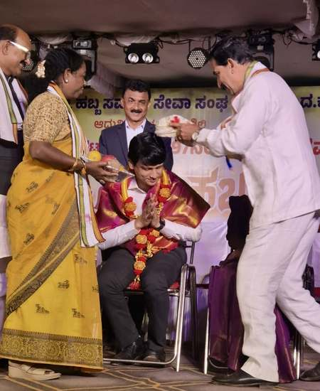
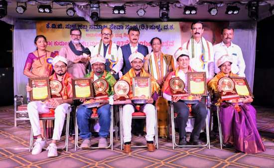
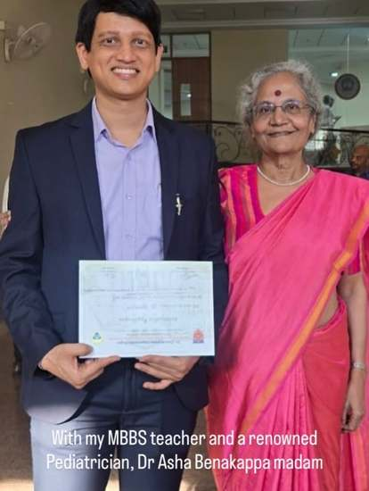
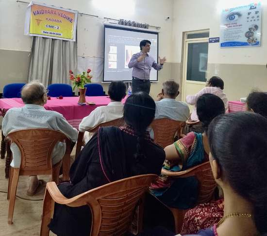
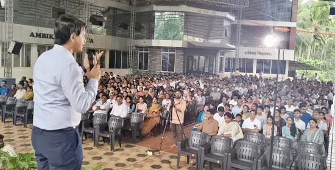
A responsible explanation of EVLA for varicose veins, including symptoms, suitability, benefits, recovery and when to seek evaluation.
Read article →Simple bowel, diet, hydration and activity habits that may reduce the risk of hemorrhoids, with guidance on when symptoms need evaluation.
Read article →A patient-friendly guide to hernia symptoms, lifestyle measures, surgical options, urgent warning signs and recovery after hernia repair.
Read article →A practical guide to choosing a doctor who listens, explains clearly, gives honest advice and supports patients through treatment and recovery.
Read article →What day care surgery means, which procedures may be suitable, how safety is assessed and what recovery at home usually involves.
Read article →Call or WhatsApp to schedule an appointment.